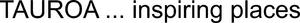

Trade Mark Journal No.2025/014 4 April 2025
WO0000001846592 (9,35,36,39,41,43)
Office of origin: Austria
Date of International Registration:18 November 2024
Date of designation in the UK:
18 November 2024

International priority date claimed: 23 May 2024
(Austria)
- Class 9
- Recorded content; apparatus for recording images; apparatus for the reproduction of images; apparatus for the transmission of images; spectacles; compact discs; computers; computer software; DVDs; smartglasses; data processing equipment; digital recording media; electronic notice boards; fire extinguishing apparatus; cinematographic machines and apparatus; photographic apparatus and instruments; computer programs, recorded; covers for smartphones; information technology and audiovisual equipment; interactive multimedia computer game programs; inspecting apparatus and instruments; headphones; head protection; goggles; loudspeakers; life-saving apparatus and instruments; signs, luminous; magnetic data carriers, recording discs; magnets, magnetizers and demagnetizers; machine readable data carriers; coin-operated mechanisms; mobile telephones; nautical apparatus and instruments; navigation, guidance, tracking, targeting and map making devices; optical apparatus and instruments; optical devices, enhancers and correctors; calculators; cash registers; SIM cards; cases for smartphones; protective clothing [body armour]; protective masks, not for medical purposes; selfie sticks [hand-held monopods]; safety, security, protection and signalling devices; signalling apparatus and instruments; smartwatches; software for mobile phones; sunglasses; games software; goggles for sports; diving equipment; sound recording apparatus; sound reproduction apparatus; sound transmitting apparatus; portable media players; wearable activity trackers; teaching apparatus and instruments; wind socks for indicating wind direction; scientific apparatus and instruments; scientific and laboratory devices for treatment using electricity.
- Class 35
- Administrative data processing; business analysis, research and information services; accountancy, book keeping and auditing; clerical services; clerical services; promotion services; loyalty, incentive and bonus program services; business management; business assistance; commercial information services and consumer product information services; marketing; marketing research; organisation and implementation of trade fairs and exhibitions for commercial or advertising purposes; online retail services for downloadable and pre-recorded music and movies; human resources management and recruitment services; product demonstration and product presentation; collection and systematization of business data; business consulting; business administration; rental of office machines; advertising; provision of advertising space, time and media; public relations services; none of the above services provided in the energy or mining sectors.
- Class 36
- Issuing of prepaid value and voucher cards; banking; safe deposit services; finance services; valuation services; financial management relating to banking; finance services; fundraising and financial sponsorship; monetary affairs; real estate affairs; capital investment; pawnbrokerage; insurance underwriting and appraisals and assessment for insurance purposes; insurance underwriting; warranty services; providing temporary office facilities; none of the above services provided in the energy or mining sectors.
- Class 39
- Navigation services; parking and vehicle storage, mooring; travel and passenger transportation; rescue services, towing services and vehicle recovery services; transportation and delivery of goods; transport; arranging of transportation for travel tours; rental of means of transportation; packaging and storage of goods; distribution by pipeline and cable; none of the above services provided in the energy or mining sectors.
- Class 41
- Audio and video production, and photography; training; lending library services; sports and fitness services; gaming services for entertainment purposes; educational instruction; film production, other than advertising films; game services provided online from a computer network; organisation of conferences, exhibitions and competitions; sporting and cultural activities; entertainment services; publishing, reporting, and writing of texts; translation and interpretation; none of the above services provided in the energy or mining sectors.
- Class 43
- Hotels, hostels and boarding houses, holiday and tourist accommodation; food and drink catering; boarding for animals; temporary accommodation; services for providing food and drink; rental of furniture, linens and table settings; providing conference facilities; providing exhibition facilities; providing convention facilities; providing social event facilities; providing meeting facilities; nurseries, day-care and elderly care facilities; none of the above services provided in the energy or mining sectors.
Distribution & Marketing GmbH
Representative: Brandstock Legal GmbH, Möhlstraße 2, 81675 München, GERMANY